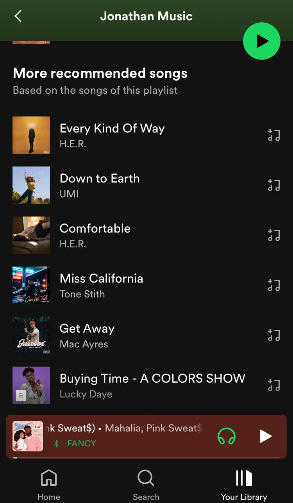

Music is a valuable source of entertainment.
It allows us to immerse ourselves in the rhythm of songs and listen to the words that seem like they are telling our stories.
However, discovering new music could be a challenge.
The inspiration for this project was the "More recommended songs" at the bottom of a user playlist in Spotify.

The goal of this project was to try to predict Rivian stock for roughly 2 months out using Time Series methods and Recurrent Neural Networks(LSTM).
The goal of this project was to use SQL to do exploratory analytics as well as create visualizations from SQL queries using Tableau.
This project uses Convolutional Neural Networks (CNN) to make predictions on a on whether a patient has Pneumonia not for a hospital.
This project uses Machine Learning (ML) to make predictions on whether a customer will churn or not for a telecommunications company.
The project shows correlations between what drives the value of a home and may advise the homeowner to make the necessary upgrades to get better value for their homes.